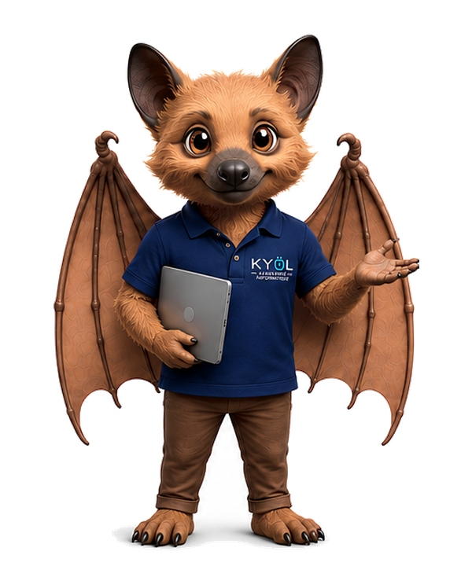

Dépannage & maintenance
Diagnostic des pannes matérielles ou logicielles, optimisation, nettoyage, mises à jour et maintenance préventive.
Diagnostic, sécurisation, réseau, sauvegarde et prise en main de vos outils numériques.
Diagnostic des pannes matérielles ou logicielles, optimisation, nettoyage, mises à jour et maintenance préventive.
Protection des postes, antivirus, prévention des risques, sécurisation des accès et bonnes pratiques numériques.
Installation et optimisation du Wi-Fi, des routeurs, imprimantes réseau et équipements connectés.
Mise en place de sauvegardes locales et cloud, synchronisation, restauration et organisation des données.
Aide au choix du matériel, audit des usages, recommandations et accompagnement dans vos projets numériques.
Prise en main des outils, accompagnement personnalisé et formations adaptées à votre niveau.
KYÖL Assistance Informatique intervient sur l’ensemble de la Nouvelle-Calédonie.
